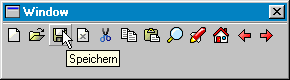

Hilfe
CreateToolBar

Aufruf
Parameter
Rückgabewert
Beschreibung
Toolbar ist eine horizontale Leiste mit Symbolen. Die Grafikdatei enthält Symbole. Jedes Symbol muss exakt quadratisch sein und horizontal angeordnet sein. Grafikanzahl wird automatisch ermittelt (Länge geteilt durch Höhe). Pixel oben/links gibt die Transparenzfarbe an. Ein Bild, das nur aus der Transparentfarbe besteht erzeugt einen Trenner in der Toolbar.
Nach einem Mausklick auf ein Symbol wird ein Event empfangen. EventData enthält Nummer des Symbols (Start ab 0).
enthält Nummer des Symbols (Start ab 0).
Beispiel
Siehe auch
toolbar = CreateToolBar (datei$, x, y, breite, höhe, gruppe [,style])
Parameter
| datei | Name einer Grafikdatei |
| x | Koordinate x |
| y | Koordinate y |
| breite | Breite von Toolbar |
| höhe | Höhe von Toolbar |
| gruppe | Identität einer Gruppe |
| style | (reserviert) |
Rückgabewert
Identität des Toolbar-Objekts wird zurückgeliefert
Beschreibung
Die Funktion CreateToolBar erstellt ein Toolbar-Objekt (Werkzeugleiste). Gebe dazu die Startkoordinate x/y und breite/höhe an. Gruppe ist die Identität von Window, Panel, Tabber oder Canvas.

Toolbar ist eine horizontale Leiste mit Symbolen. Die Grafikdatei enthält Symbole. Jedes Symbol muss exakt quadratisch sein und horizontal angeordnet sein. Grafikanzahl wird automatisch ermittelt (Länge geteilt durch Höhe). Pixel oben/links gibt die Transparenzfarbe an. Ein Bild, das nur aus der Transparentfarbe besteht erzeugt einen Trenner in der Toolbar.
Nach einem Mausklick auf ein Symbol wird ein Event empfangen. EventData
enthält Nummer des Symbols (Start ab 0).
Ab Version 1.42 (Start ab -1).
Hinweis: Anscheinend sind viele Parameter reserviert. So kann man Höhe usw. nicht richtig einstellen. Benutze GadgetHeight um Höhe des Objekts zu ermitteln.
um Höhe des Objekts zu ermitteln.Beispiel
Erstellt ein Fenster mit Toolbar:
img = CreateImage(96, 32)
SetBuffer ImageBuffer(img, 0)
Color 255, 0, 0
Rect 1, 1, 30, 30, 1
Color 255, 255, 0
Rect 33, 1, 30, 30, 1
Color 0, 255, 0
Rect 65, 1, 30, 30, 1
SaveImage img, "C:\bild.tmp"
FreeImage img
window = CreateWindow("Window", 0, 0, 300, 300, 0, 1)
toolbar = CreateToolBar("c:\bild.tmp", 0, 0, 96, 32, window)
Repeat
If GetKey() = 27 Then End
nr = WaitEvent()
If nr = $803 Then DeleteFile "c:\bild.tmp" : End
If nr = $401 And EventSource() = toolbar Then
Notify "Symbol=" + EventData()
EndIf
Forever
SetBuffer ImageBuffer(img, 0)
Color 255, 0, 0
Rect 1, 1, 30, 30, 1
Color 255, 255, 0
Rect 33, 1, 30, 30, 1
Color 0, 255, 0
Rect 65, 1, 30, 30, 1
SaveImage img, "C:\bild.tmp"
FreeImage img
window = CreateWindow("Window", 0, 0, 300, 300, 0, 1)
toolbar = CreateToolBar("c:\bild.tmp", 0, 0, 96, 32, window)
Repeat
If GetKey() = 27 Then End
nr = WaitEvent()
If nr = $803 Then DeleteFile "c:\bild.tmp" : End
If nr = $401 And EventSource() = toolbar Then
Notify "Symbol=" + EventData()
EndIf
Forever
Siehe auch